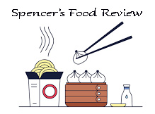
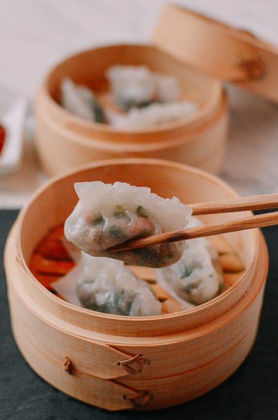

Passionate
We are passionate about teaching people about Chinese food and culture.
Click Here to Learn More About the Dishes Served at Dim Sum
Successful
Spencer's Food Reviews is a successful blog. The business is expanding quickly within 5 years a lot of progress has been made.

"Spencer's Food Review" has been running for 5 years. On this website, we review restaurants, teach people about food, and give our opinions. Use the "Food" tab to learn about Dim Sum dishes and use the "Restaurant" tab to see the restaurants we have reviewed. We specialize in Chinese dishes but we enjoy dishes from other cultures. We will review more dishes and restaurants from other cultures soon. Stay tuned!
What is Dim Sum?
Dim Sum is a style of Chinese brunch. Dim Sum originated in China and it has become immensely popular worldwide. The food is served in small portions and the dishes are mainly steamed and fried. The food can be served from carts or ordered from a menu. Here is a quick video about Dim Sum.
There are many Dim Sum restaurants in Toronto and in the GTA. The best restaurants are located in Scarbrough and Richmond Hill but those restaurants are very far. We will recommend some restaurants in Toronto for those who cannot travel far.
Dim Sum Drinks
Did you know in Cantonese, Dim Sum yum cha 飲茶 means to drink tea. There are a lot of drinks served at Dim Sum restaurants but the classic drink is tea. Tea is served at restaurants because it is an old Chinese tradition. There are many flavours of tea but the tea we recommend and the most popular teas are:

How We Rate Restaurants
Spencer's Food Reviews has 5 main criteria when it comes to reviewing restaurants. This is the criteria we use to rate restaurants:
- Ambience
- Cleanliness
- Quality of Food
- Value of Restaurant
- Service
We rate restaurants by the 5-star method here are what each star means.
News
We are slowly going to review restaurants other than Chinese restaurants. If you would like us to review your restaurant contact us! Visit our about page for more information
Updates
We constantly update our website. New food and restaurants are going to be posted. Check our updates for more information.
Our Latest Post: Dumplings
Restaurant of The Month